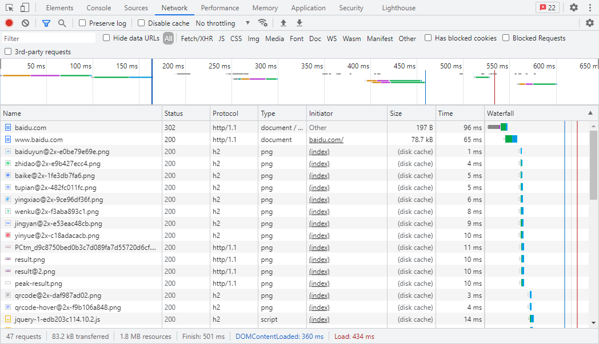
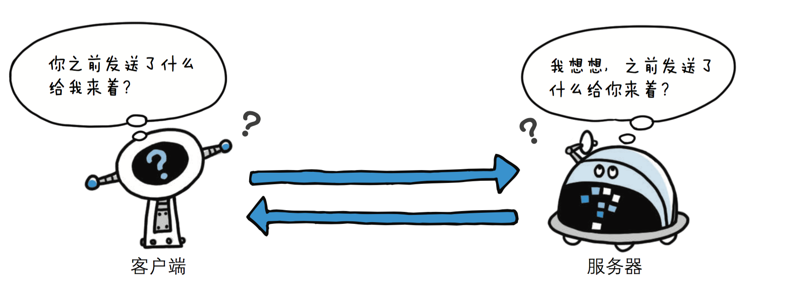

OkHttp基本使用—基于HTTP协议
打开浏览器 -> 输入网址 -> 按下回车，经过一顿行云流水的操作，我们想要访问的网站内容便展现在显示器上。这几个操作看似简单，实际背后蕴含着复杂的机制，包括输入的域名 (例如www.baidu.com) 如何定位到对应的服务器，服务器如何接收浏览器的请求并返回正确的内容，浏览器如何呈现返回的数据……
本文主要是先对其中的HTTP协议进行分析，后续讲述在Java编程中如何利用Square公司开发的OkHttp框架来构建HTTP请求来调取第三方接口。
一 HTTP协议
1. HTTP简介
超文本传输协议 (HyperText Transfer Protocol，缩写：HTTP) 是一种用于分布式、协作式和超媒体信息系统的应用层协议。HTTP是万维网的数据通信的基础。
HTTP的发展是由蒂姆·伯纳斯-李于1989年在欧洲核子研究组织(CERN) 所发起。HTTP的标准制定由万维网协会 (World Wide Web Consortium，W3C)和互联网工程任务组 (Internet Engineering Task Force，IETF) 进行协调，最终发布了一系列的RFC，其中最著名的是1999年6月公布的 RFC 2616，定义了HTTP协议中现今广泛使用的一个版本——HTTP 1.1。
2014年12月，互联网工程任务组 (IETF) 的Hypertext Transfer Protocol Bis (httpbis) 工作小组将HTTP/2标准提议递交至IESG进行讨论，于2015年2月17日被批准。 HTTP/2标准于2015年5月以RFC 7540正式发表，取代HTTP 1.1成为HTTP的实现标准。
在谷歌浏览器中，我们进入开发者模式可以看到资源使用的协议，如下图，部分是HTTP/1.1，部分则是HTTP/2.0。
HTTP是一个客户端终端 (用户) 和服务器端 (网站) 请求和应答的标准 (TCP)。通过使用网页浏览器、网络爬虫或者其它的工具，客户端发起一个HTTP请求到服务器上指定端口 (默认端口为80) 。我们称这个客户端为用户代理程序 (user agent) 。应答的服务器上存储着一些资源，比如HTML文件和图像。我们称这个应答服务器为源服务器 (origin server)。在用户代理和源服务器中间可能存在多个“中间层”，比如代理服务器、网关或者隧道 (tunnel)。
尽管TCP/IP协议是互联网上最流行的应用，HTTP协议中，并没有规定必须使用它或它支持的层。事实上，HTTP可以在任何互联网协议上，或其他网络上实现。HTTP假定其下层协议提供可靠的传输。因此，任何能够提供这种保证的协议都可以被其使用。因此也就是其在TCP/IP协议族使用TCP作为其传输层。
通常，由HTTP客户端发起一个请求，创建一个到服务器指定端口 (默认是80端口) 的TCP连接。HTTP服务器则在那个端口监听客户端的请求。一旦收到请求，服务器会向客户端返回一个状态，比如”HTTP/1.1 200 OK”，以及返回的内容，如请求的文件、错误消息、或者其它信息。
2. HTTP工作原理
HTTP 协议定义 Web 客户端如何从 Web 服务器请求 Web 页面，以及服务器如何把 Web 页面传送给客户端。HTTP 协议采用了请求/响应模型。客户端向服务器发送一个请求报文，请求报文包含请求的方法、URL、协议版本、请求头部和请求数据。服务器以一个状态行作为响应，响应的内容包括协议的版本、成功或者错误代码、服务器信息、响应头部和响应数据。
以下是 HTTP 请求/响应的步骤：
客户端连接到 Web 服务器
一个 HTTP 客户端，通常是浏览器，与Web服务器的 HTTP 端口 (默认为80) 建立一个 TCP 套接字连接。例如，http://www.baidu.com；发送 HTTP 请求
通过 TCP 套接字，客户端向 Web 服务器发送一个文本的请求报文，一个请求报文由请求行、请求头部、空行和请求数据4部分组成；服务器接受请求并返回 HTTP 响应
Web 服务器解析请求，定位请求资源。服务器将资源复本写到 TCP 套接字，由客户端读取。一个响应由状态行、响应头部、空行和响应数据4部分组成；释放连接 TCP 连接
若 connection 模式为close，则服务器主动关闭 TCP 连接，客户端被动关闭连接，释放 TCP 连接；若connection 模式为keepalive，则该连接会保持一段时间，在该时间内可以继续接收请求；客户端浏览器解析 HTML 内容
客户端浏览器首先解析状态行，查看表明请求是否成功的状态代码。然后解析每一个响应头，响应头告知以下为若干字节的HTML文档和文档的字符集。客户端浏览器读取响应数据 HTML，根据 HTML 的语法对其进行格式化，并在浏览器窗口中显示。

3. HTTP特点
HTTP 协议一共有五大特点：1. 支持客户/服务器模式；2. 简单快速；3. 灵活；4. 无连接；5. 无状态 。
无连接
无连接的含义是限制每次连接只处理一个请求。服务器处理完客户的请求，并收到客户的应答后，即断开连接。采用这种方式可以节省传输时间，并且可以提高并发性能。
但是无连接有两种方式，早期的 HTTP 协议是一个请求一个响应之后，直接就断开了，但是现在的 HTTP 协议1.1版本不是直接就断开了，而是等几秒钟，如果用户在这几秒钟之内有新的请求，那么还是通过之前的连接通道来收发消息；如果这几秒钟用户没有发送新的请求，那么就会断开连接，这样可以提高效率，减少短时间内建立连接的次数，因为建立连接也是耗时的。连接默认时间是3s，这个时间可以通过后端代码来调整，网站根据用户的行为来分析统计出一个最优的等待时间。
无状态
HTTP 是一种不保存状态，即无状态 (stateless) 协议。HTTP 协议自身不对请求和响应之间的通信状态进行保存。也就是说在 HTTP 这个级别，协议对于发送过的请求或响应都不做持久化处理。

使用 HTTP 协议，每当有新的请求发送时，就会有对应的新响应产生。协议本身并不保留之前一切的请求或响应报文的信息。这是为了更快地处理大量事务，确保协议的可伸缩性，而特意把 HTTP 协议设计成如此简单的。
可是，随着 Web 的不断发展，因无状态而导致业务处理变得棘手的情况增多了。比如，用户登录到一家购物网站，即使他跳转到该站的其他页面后，也需要能继续保持登录状态。针对这个实例，网站为了能够掌握是谁送出的请求，需要保存用户的状态。 HTTP/1.1 虽然是无状态协议，但为了实现期望的保持状态功能，于 是引入了 Cookie 技术。有了 Cookie 再用 HTTP 协议通信，就可以管理状态了。
4. HTTP请求方法
HTTP/1.1协议中共定义了八种方法（也叫“动作”）来以不同方式操作指定的资源：
GET：获取资源GET 方法用来请求访问已被 URI 识别的资源。指定的资源经服务器端解析后返回响应内容。如果请求的资源是文本，那就保持原样返回；如果是像 CGI (Common Gateway Interface，通用网关接口) 那样的程序，则返回经过执行后的输出结果。
HEAD：获取报文首部HEAD 方法和 GET 方法一样，只是不返回报文主体部分。用于确认 URI 的有效性及资源更新的日期时间等。
POST：传输实体主体向指定资源提交数据，请求服务器进行处理 (例如提交表单或者上传文件) 。数据被包含在请求本文中。这个请求可能会创建新的资源或修改现有资源，或二者皆有。
PUT：传输文件PUT 方法用来传输文件。就像 FTP 协议的文件上传一样，要求在请求报文的主体中包含文件内容，然后保存到请求 URI 指定的位置。但是，鉴于 HTTP/1.1 的 PUT 方法自身不带验证机制，任何人都可以 上传文件 , 存在安全性问题，因此一般的 Web 网站不使用该方法。若配合 Web 应用程序的验证机制，或架构设计采用REST（REpresentational State Transfer，表征状态转移）标准的同类 Web 网站，就可能会开放使用 PUT 方法。
DELETE：删除文件DELETE 方法用来删除文件，是与 PUT 相反的方法。DELETE 方法按请求 URI 删除指定的资源。 但是，HTTP/1.1 的 DELETE 方法本身和 PUT 方法一样不带验证机 制，所以一般的 Web 网站也不使用 DELETE 方法。当配合 Web 应用程序的验证机制，或遵守 REST 标准时还是有可能会开放使用的。
TRACE：追踪路径TRACE 方法是让 Web 服务器端将之前的请求通信环回给客户端的方法。 发送请求时，在 Max-Forwards 首部字段中填入数值，每经过一个服 务器端就将该数字减 1，当数值刚好减到 0 时，就停止继续传输，最 后接收到请求的服务器端则返回状态码 200 OK 的响应。 客户端通过 TRACE 方法可以查询发送出去的请求是怎样被加工修改 / 篡改的。这是因为，请求想要连接到源目标服务器可能会通过代理 中转，TRACE 方法就是用来确认连接过程中发生的一系列操作。 但是，TRACE 方法本来就不怎么常用，再加上它容易引发 XST（Cross-Site Tracing，跨站追踪）攻击，通常就更不会用到了。
OPTIONS：询问支持的方法OPTIONS 方法用来查询针对请求 URI 指定的资源支持的方法。
CONNECT：要求用隧道协议连接代理CONNECT 方法要求在与代理服务器通信时建立隧道，实现用隧道协议进行 TCP 通信。主要使用 SSL（Secure Sockets Layer，安全套接层）和 TLS（Transport Layer Security，传输层安全）协议把通信内容加密后经网络隧道传输。
5. HTTP状态码
所有HTTP响应的第一行都是状态行，依次是当前HTTP版本号，3位数字组成的状态代码，以及描述状态的短语，彼此由空格分隔。
状态代码的第一个数字代表当前响应的类型：
- 1xx消息——请求已被服务器接收，继续处理
- 2xx成功——请求已成功被服务器接收、理解、并接受
- 3xx重定向——需要后续操作才能完成这一请求
- 4xx请求错误——请求含有词法错误或者无法被执行
- 5xx服务器错误——服务器在处理某个正确请求时发生错误
虽然 RFC 2616 中已经推荐了描述状态的短语，例如”200 OK”，”404 Not Found”，但是WEB开发者仍然能够自行决定采用何种短语，用以显示本地化的状态描述或者自定义信息。
参考资料：《图解HTTP》
二 OkHttp框架
1. OkHttp简介
OkHttp 是一个高效的 HTTP 客户端：
- HTTP / 2支持允许对同一主机的所有请求共享一个套接字。
- 连接池可减少请求延迟（如果 HTTP / 2不可用）。
- 透明的 GZIP 缩小了下载大小。
- 响应缓存可以完全避免网络重复请求。
2. OkHttp实战
以下实例代码部分来自于 OkHttp 官网：https://square.github.io/okhttp/
(1) 导入依赖
在 pom.xml 中导入 OkHttp 的依赖：
<dependency>
<groupId>com.squareup.okhttp3</groupId>
<artifactId>okhttp</artifactId>
<version>3.14.9</version>
</dependency>(2) 同步GET请求
下载一个文件，打印它的头文件，并以字符串的形式打印它的响应体。
响应体上的string()方法对于小型文档来说是方便而高效的。但是如果响应体很大 (大于1 MiB)，避免使用string()，因为它会将整个文档加载到内存中。在这种情况下，倾向于将 body 转为 stream。
private final OkHttpClient client = new OkHttpClient();
public void run() throws Exception {
Request request = new Request.Builder()
.url("https://publicobject.com/helloworld.txt")
.build();
try (Response response = client.newCall(request).execute()) {
if (!response.isSuccessful()) throw new IOException("Unexpected code " + response);
Headers responseHeaders = response.headers();
for (int i = 0; i < responseHeaders.size(); i++) {
System.out.println(responseHeaders.name(i) + ": " + responseHeaders.value(i));
}
System.out.println(response.body().string());
}
}(3) 异步GET请求
在工作线程上下载一个文件，并在响应可读时返回。回调在响应头准备好之后进行。读取响应体仍然可能会阻塞。OkHttp目前不提供异步 api 来接收部分响应体。
private final OkHttpClient client = new OkHttpClient();
public void run() throws Exception {
Request request = new Request.Builder()
.url("http://publicobject.com/helloworld.txt")
.build();
client.newCall(request).enqueue(new Callback() {
@Override public void onFailure(Call call, IOException e) {
e.printStackTrace();
}
@Override public void onResponse(Call call, Response response) throws IOException {
try (ResponseBody responseBody = response.body()) {
if (!response.isSuccessful()) throw new IOException("Unexpected code " + response);
Headers responseHeaders = response.headers();
for (int i = 0, size = responseHeaders.size(); i < size; i++) {
System.out.println(responseHeaders.name(i) + ": " + responseHeaders.value(i));
}
System.out.println(responseBody.string());
}
}
});
}(4) 异步POST请求 (form 表单)
这种方式用来上传 String 类型的键值对：
OkHttpClient client = new OkHttpClient();//创建OkHttpClient对象
FormBody.Builder formBody = new FormBody.Builder();//创建表单请求体
formBody.add("username","zhangsan");//传递键值对参数
Request request = new Request.Builder()//创建Request 对象
.url("http://www.baidu.com")
.post(formBody.build())//传递请求体
.build();
client.newCall(request).enqueue(new Callback() {。。。});//此处省略回调方法(5) 异步POST请求 (Json 格式)
RequestBody 是抽象类，故不能直接使用，但是他有静态方法create，使用这个方法可以得到 RequestBody 对象，这种方式可以上传 Json 对象或File对象。
上传 Json 对象使用示例如下：
OkHttpClient client = new OkHttpClient();//创建OkHttpClient对象
MediaType JSON = MediaType.parse("application/json; charset=utf-8");//数据类型为json格式
String jsonStr = "{\"username\":\"lisi\",\"nickname\":\"李四\"}";//json数据
RequestBody body = RequestBody.create(JSON, josnStr);
Request request = new Request.Builder()
.url("http://www.baidu.com")
.post(body)
.build();
client.newCall(request).enqueue(new Callback() {...});//此处省略回调方法上传File对象使用示例如下：
OkHttpClient client = new OkHttpClient();//创建OkHttpClient对象
MediaType fileType = MediaType.parse("File/*");//数据类型为json格式
File file = new File("path");//file对象.
RequestBody body = RequestBody.create(fileType , file );
Request request = new Request.Builder()
.url("http://www.baidu.com")
.post(body)
.build();
client.newCall(request).enqueue(new Callback() {...});//此处省略回调方法(6) 设置请求头
OkHttp 中设置请求头特别简单，在创建request对象时调用一个方法即可。
使用示例如下：
Request request = new Request.Builder()
.url("http://www.baidu.com")
.header("User-Agent", "OkHttp Headers.java")
.addHeader("token", "myToken")
.build();(7) 身份认证
有时第三方接口需要基本身份验证，可在请求头中加入用户名、密码等信息：
String credential = Credentials.basic("elastic", "hzxfadmin123.");
Request request = new Request.Builder()
.header("Authorization", credential)
.url("https://www.aivisioncloud.com:9200/_cat/indices?v")
.get()
.build();
try(Response response = client.newCall(request).execute()){
System.out.println(response.body().string());
}